Картки-розмовлялки · зведений аудит дизайну · 13 вересня 2026
Шлях до дев'ятки
Чому апка сьогодні відчувається на 4 з 10, що саме є в Duolingo ABC, Khan Kids і Sago Mini, чого немає в нас, і в якому порядку це закривати.
Основа: 31 скріншот з симулятора iPhone 17 Pro, п'ять звітів агентів (конкуренти, 30 екранів × 6 осей, 65 анімацій, архітектура, досвід), код гілки fix/content-availability-contract.
4.5дитяча зона сьогодні, середнє по 26 екранах
8ілюстрації карток, навбар, мапа — острови якості
9ціль після п'яти спринтів
Вердикт
Контент на 8, оболонка на 4. Акварельні картки, нова навігаційна панель і намальована мапа виглядають як робота одного автора. Усе навколо них — Material-каркас: емодзі замість іконок, стандартні заголовки й кнопки в шести іграх, сірі плитки нагород, порожній splash. Око бачить трьох різних авторів в одному кадрі, і саме це читається як «дешево».
Топові апки відрізняються не окремими екранами, а тим, що рух, звук, персонаж і іконки — один шар, через який проходить усе. У нас є зерна кожної системи, але жодне не є обов'язковим шляхом: два найновіші віджети додали 59 сирих кольорів і власну шкалу натискання.
Дитяча легкість5.4
Рух і фідбек5.2
Візуальна ідентичність4.6
Свято і підбадьорення4.4
Присутність персонажа1.9
Що видно на реальних екранах
Знімки з живої збірки, а не мокапи. Зайчик є на двох із 31 екрана.
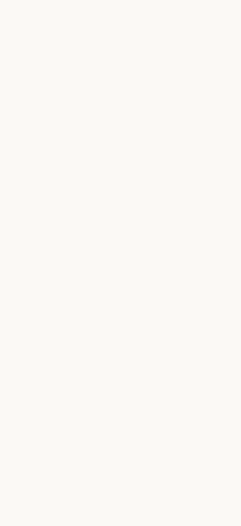
зламано Splash порожній. Прекеш лого відвалюється по таймауту 1.2 с. Перше враження — пустота.
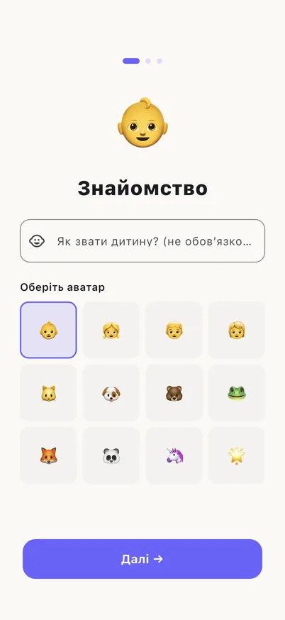
Material Онбординг. Герой екрана — емодзі 👶, аватари — емодзі, форма — стандартна. Зайчика ще немає.
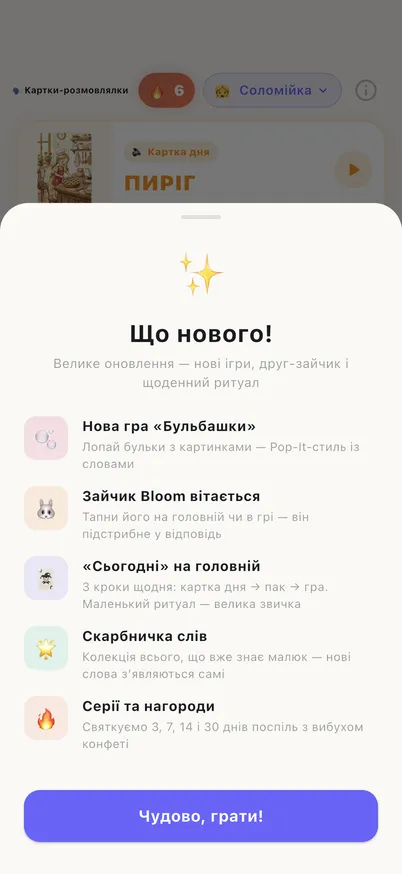
текст у дитячій зоні Перший вхід. Поверх дитячої головної — п'ять абзаців «Що нового» для батьків.
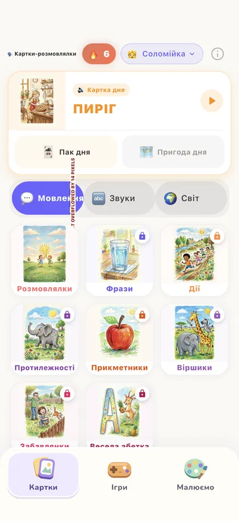
баг верстки Головна. Фільтр «Мовлення / Звуки / Світ» переповнюється на 14 px. Дев'ять елементів просять уваги, головної дії немає.
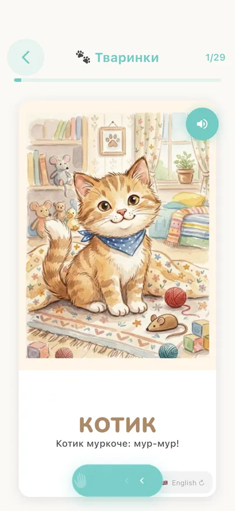
острів 8/10 Картки. Велика ілюстрація, велике слово, зрозумілий динамік. Але «English» у дитячій зоні і жодного персонажа.
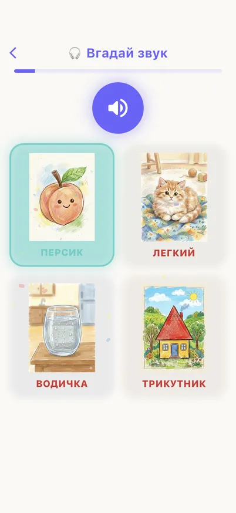
без свята Вгадай звук. Правильна відповідь — лише бірюзова рамка. Ні персонажа, ні звуку похвали, емодзі 🎧 у заголовку.
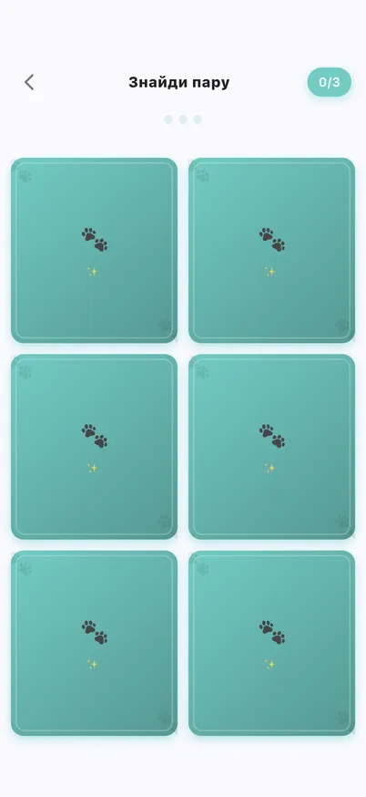
найменш дитяча Знайди пару. Плоскі квадрати з емодзі лапкою. Спека редизайну вже є в docs/design.
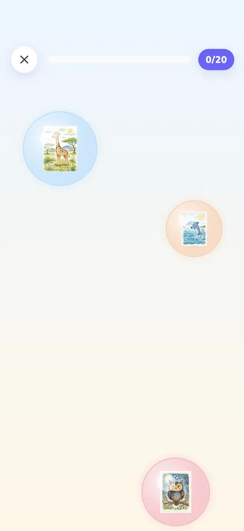
порожньо Бульбашки. Три бліді кола з мініатюрами і 80 % порожнього екрана. Виглядає незавершено.
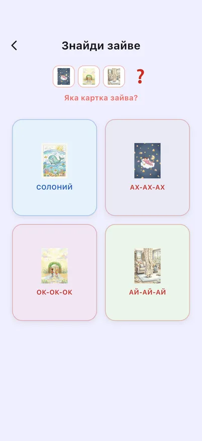
мініатюри Знайди зайве. Картки 80 px у пастельних плитках, червоний «?» в заголовку, підписи, які дитина не читає.
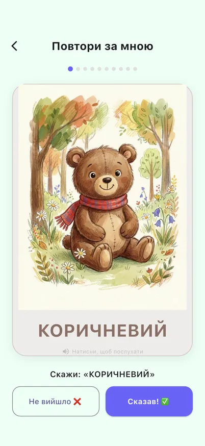
емодзі-кнопки Повтори за мною. «Не вийшло ❌» і «Сказав! ✅» замість іконок, інструкція текстом.
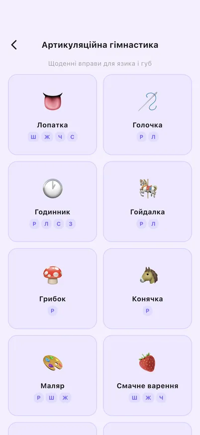
не наш стиль Артикуляція. Сітка емодзі 👅🪡🕐🍄 з текстом. Найдалі від акварельної мови апки.
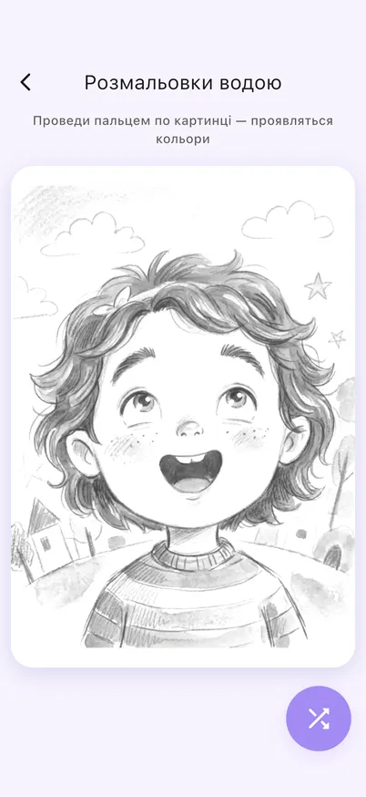
пів екрана порожні Розмальовка. Гарний ескіз, але сторінка порожня на 60 %, кнопка «перемішати» — Material FAB.
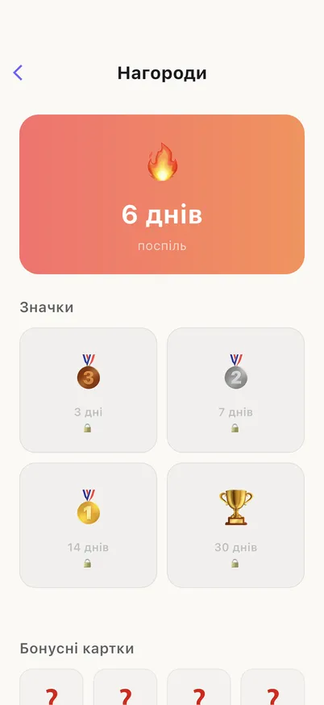
плейсхолдер Нагороди. 🔥 на градієнті, медалі 🥉🥈🥇🏆 на сірих плитках із 🔒, бонуси — червоні «?».
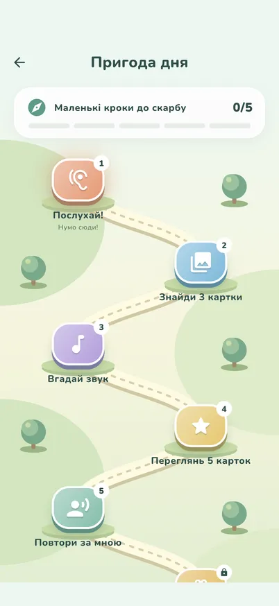
острів, але Мапа. Ландшафт і стежка гарні. Зупинки — Material-іконки на квадратах, під кожною текст, зайчик стежкою не йде.
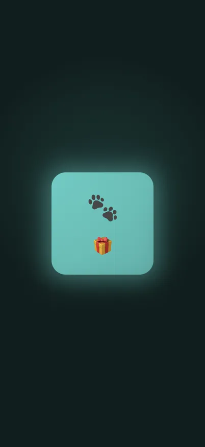
поза брендом Пригода дня. Майже чорний екран із плиткою і емодзі 🐾🎁 у теплій кремовій апці. 7 контролерів, два крутяться назавжди.
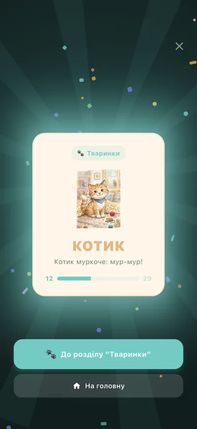
дисонанс Після відкриття. Конфеті на темному фоні, дві Material-кнопки. Єдиний екран, де є щось схоже на свято.
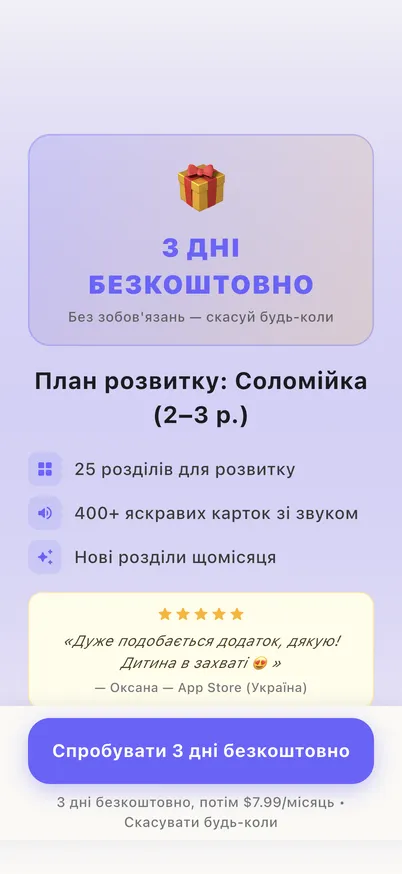
інший всесвіт Paywall. Емодзі 🎁 як герой, інша палітра і шрифт, ніж у дитячій зоні.
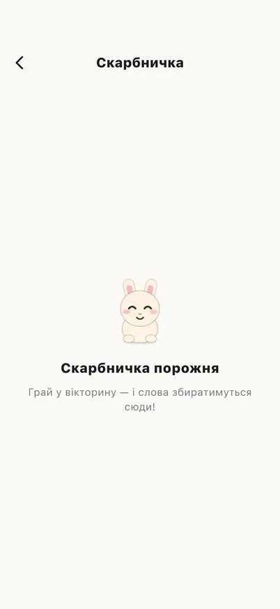
статуетка Скарбничка. Один із двох екранів, де є зайчик. Малий, статичний, очі заплющені.
Що є в апці на 9/10 і немає в нас
Стисло з бенчмарку 13 конкурентів. Джерела і деталі — у docs/competitor-design-benchmark-2026-09-13.md.
У топових апок
У нас сьогодні
1
Кожен тап відповідає трьома каналами одразу: стиск, звук, хаптик, на pointer-down, до 100 мс
8 різних реалізацій натискання, 8 із 22 дитячих таргетів мовчать, KidTap використаний 3 рази проти 95 оголених жестів
2
Стану «неправильно» не існує: м'який звук, підказка через 1.5–2 с, прогрес усе одно росте
Червона рамка і ❌ у двох іграх, три різні шейки, підказки немає
3
Живий персонаж зі станами. Duo: Rive state machine, 20+ візем, ідл ніколи не повторюється
CustomPainter з двома позами, очі завжди заплющені, один bounce 480 мс, не реагує на звук
4
Один очевидний наступний крок без тексту. Khan Kids: будинок і одна велика зелена кнопка
Головна з дев'ятьма конкуруючими елементами, кроки дня підписані текстом
5
Один стиль ілюстрації, нуль Material-іконок і емодзі в дитячій зоні
78 Icons.* і близько 250 емодзі, іконка паку — емодзі з JSON
6
Свято — секвенція з ритмом і рівнями. Duolingo: редизайн одного milestone дав +1.7 % утримання D7
П'ять різних свят, три конфеті. Найбільша перемога дитини, пройдений пак, беззвучна
7
Звук як система: 8–12 SFX, голос під пальцем, без фонових лупів
Три синтезовані заглушки. Praise і інструкції не існують, тому playPraise мовчить у всій апці
8
Голос говорить першим і його можна повторити великою кнопкою
Інструкції текстом, послідовність аудіо на Future.delayed з магічними числами у 25+ місцях
9
Батьківська зона за гейтом, з іншим тоном, не протікає в дитячу
«English», «Що нового» і інфо-іконка в дитячій зоні, батьківські екрани в іншій палітрі
10
Прощення дотику: 72 dp і більше, тап із мікро-драгом зараховується
72 dp не закодовано в токенах, кожен екран пише свої 48 / 56 / 64 / 72
Зламане, а не негарне
Це виправляється за тиждень і не залежить від дизайну.
Свято паку беззвучне і небезпечне.cards_screen.dart:450 зупиняє аудіо, оверлей не грає ні tada, ні похвали. Повноекранний жест на конфеті робить подвійний pop: випадковий тап виносить дитину на головну.
S
Переповнення фільтра категорій на головній, packs_tab.dart:1221. Емодзі 22sp і жирне слово не влазять у третину ширини екрана.
S
Порожній splash через таймаут прекешу лого 1.2 с.
S
Пригода дня — найдорожчий екран: 7 контролерів, два крутяться назавжди, три повноекранні CustomPaint без RepaintBoundary, тінь з blur 80. На старому планшеті це повне перемальовування 60 разів на секунду.
S
Hero-переходу не існує, але cards_screen.dart:141 чекає 400 мс «на Hero-анімацію».
S
Reduced motion підтримують 4 місця з 45. 14 із 16 нескінченних циклів ігнорують системний прапорець.
S–M
План
Порядок узгоджений між архітектурним і UX-звітами. Принцип: спочатку шар, через який проходить усе, потім екрани. Інакше кожен красивий екран знову буде островом.
0тиждень
Зламане і перший тап
Шість пунктів вище плюс одна річ із найбільшим ефектом на відчуття якості
KidTap v2: стиск 0.94, 90 мс вниз, пружина назад, хаптик на down, поп на up. Міграція 22 дитячих таргетів. Спека в motion-audit §6.
12 тижні
Фундамент
Після цього кожна екранна правка лягає в систему, а не поверх неї
Токени v2. Тривалості й криві руху, розміри тап-таргетів 72 dp, іконок і маскота, ролі паку. Влити constants у DT, один фон. Source-тест: сирий колір лише в токенах і арт-пейнтерах.
Система руху. MotionPolicy full / reduced / test, AmbientLoop як єдиний власник repeat(), три спільні переходи замість 26 місць, Hero плитки паку в картки.
Фідбек-пайплайн. Подія → звук + хаптик + рівень візуалу. Один Celebration з рівнями micro / round / daily / milestone / pack замість п'яти. Хореографія по мілісекундах у motion-audit §4.
Тести. Golden-и на токени, KidTap, Celebration. Nunito у тестовій конфігурації.
22 тижні + ілюстратор
Один автор
Головний стрибок від 4 до 7: апка починає виглядати як робота одної руки
Система іконок. Сітка 48, контур 2.5 dp, двотонові заливки з палітри, стікерна кромка. Перша хвиля: 8 керуючих іконок, 21 обкладинка паків, 7 бейджів ігор, 5 зупинок квесту, медалі. Material лишається лише батькам.
KidScreen. Один каркас для дитячих екранів: 72 dp back у фіксованому місці, прогрес, кут для зайчика, одна черга оверлеїв. Прибирає 21 власний Scaffold.
Nunito для всієї дитячої зони через тему, одна палітра, текст з дитячих екранів геть, «English» і інфо за гейт.
Помилка без червоного і ❌: м'який звук, легкий нахил, підказка після другого промаху.
32 тижні
Персонаж і голос
Від 7 до 8: апка починає говорити і дивитись на дитину
Bloom фаза 1, чистий Flutter. Ріг з параметрами: дихання, моргання, слухає поки грає озвучка, дивиться на тап, радіє, святкує, спить, показує підказку. Присутність там, де дитина проводить 90 % часу: hero головної, кут карток, кут ігрового поля, мандрівник на мапі.
Голос і звук. Praise й інструкції через ElevenLabs (скрипт готовий, чекає ключ). 8–12 реальних SFX замість трьох заглушок. Фонової музики не додавати.
Hero головної → «Зайчик запрошує». Один великий елемент = наступний крок, персонаж показує на нього і каже вголос.
42 тижні
Довершити світ
Мапа, нагороди і батьківська зона в тому ж всесвіті
Зайчик іде стежкою мапи, зупинки ілюстровані, без тексту.
Нагороди як стікер-альбом, отримане не зникає після зриву серії.
Paywall, дашборд, статистика на тих самих токенах зі «дорослим» тоном.
Редизайни Бульбашок і Знайди пару за готовими спеками, тепер поверх KidScreen і Celebration.
52 тижні
Від 8 до 9
Професійна анімація персонажа і полірування під старі планшети
Bloom фаза 2, Rive. Файл до 250 КБ зі state machine, тільки через абстракцію MascotRenderer з painter-фолбеком для тестів. Єдина нова залежність плану. У базовий модуль, не в PAD.
Перф-профіль на планшеті 2016 року, RepaintBoundary на статичних сценах, ліміт imageCache.
Сумарно близько 10–11 тижнів. Спринти 0–2 дають стрибок від 4 до 7, бо прибирають відчуття трьох авторів. Персонаж і звук дають 8. Rive і полірування дають 9.
Чого не робити
Не заводити codegen, go_router, features-структуру.
Не додавати flutter_animate чи lottie до появи MotionPolicy: обійдуть політику руху і тестовий режим.
Не класти UI-арт, Rive і SFX у Play Asset Delivery: перша хвилина дитини не чекає на доставку.
Не будувати темну тему для дитячої зони. Одна тема.
Не заводити нові палітри у віджетах, не додавати емодзі як іконки.
Не редизайнити екрани до фундаменту спринту 1: буде ще один острів.
Не чіпати parental gate, покупки, доставку контенту: вони не причина 4/10.
Документи в репозиторії
docs/road-to-9-2026-09-13.mdГоловний звіт, текстова версія цієї сторінки з посиланнями на файли й рядки.
docs/competitor-design-benchmark-2026-09-13.md13 апок, близько 90 джерел, чекліст самооцінки для рев'ю нових екранів.
docs/ux-gap-audit-2026-09-13.md30 екранів × 6 осей з оцінками, 15 розривів, дизайн-бриф для ілюстратора й розробника.
docs/motion-audit-2026-09-13.mdІнвентар 65 анімацій, хореографія п'яти рівнів свята, спека переходів і KidTap.
docs/architecture-gap-audit-2026-09-13.mdВосьмеро фундаментів з порядком і зусиллями, список заборон.
integration_test/audit_screenshots_test.dartРіг, що знімає всі 31 екран однією командою. Міра прогресу після кожного спринту.